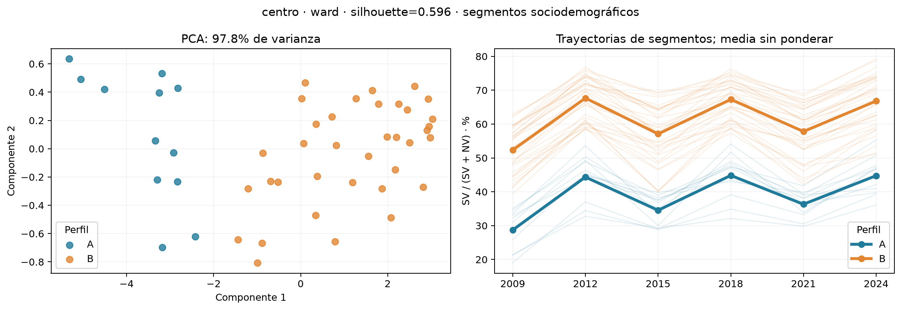
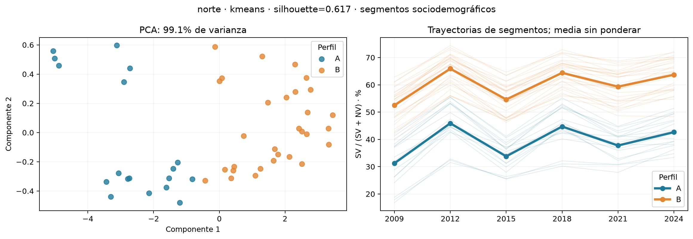
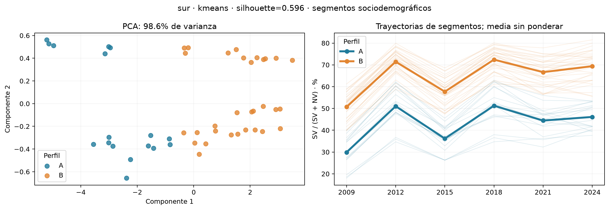
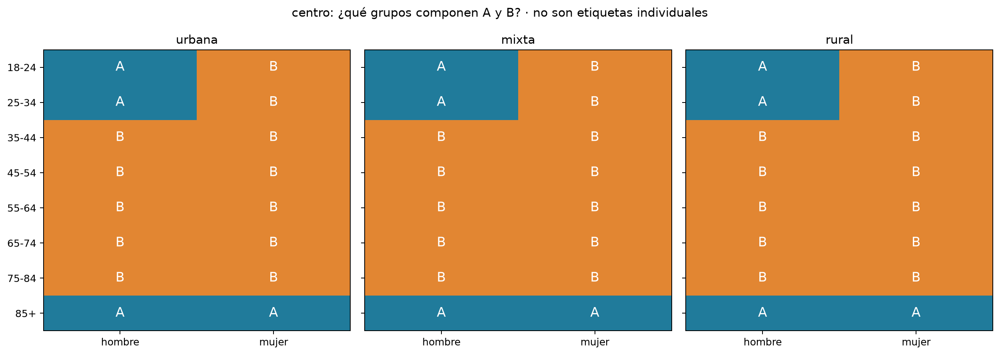
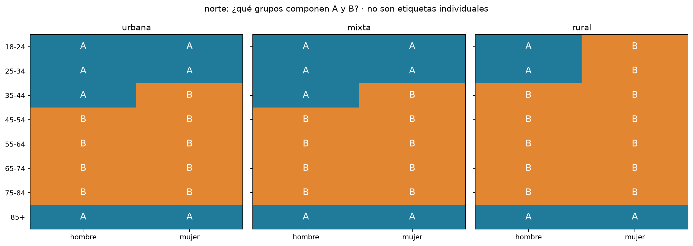
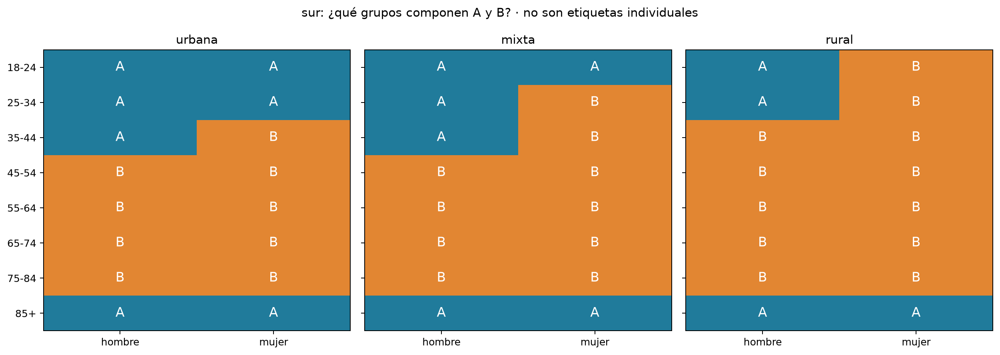
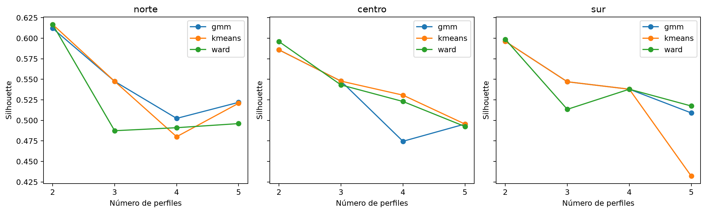

Exploración regional de segmentos por sexo, edad y tipo de sección · 2009–2024
Se suman LN/SV/NV/NS de los municipios dentro de cada combinación región × sexo × edad × tipo de sección. Se recalculan seis tasas SV/(SV+NV), una por elección, y se agrupan sus trayectorias estandarizadas. Edad, sexo y sección definen y describen los segmentos; no se codifican como números ordinales en el modelo. Cada segmento pesa igual al ajustar; los indicadores agregados se recalculan desde conteos.
Se conservan segmentos con seis elecciones, al menos 100 especificados y NS ≤20% en cada una. No se imputan elecciones ausentes. No binario aparece solo en 2024: se conserva en su tabla descriptiva y no se fuerza su asignación histórica. No hay escolaridad ni identidades individuales en la fuente.
| region | algoritmo | silhouette | cumple_filtros_estabilidad |
|---|---|---|---|
| norte | kmeans | 0.617 | True |
| centro | ward | 0.596 | True |
| sur | kmeans | 0.596 | True |
A indica menor media de participación entre las seis elecciones; B mayor media, dentro de cada región. Son nombres operativos, no categorías oficiales. Dos perfiles son una hipótesis; revisar solapamiento y alternativas.
Ver las seis fichas con pertenencia exacta y evolución histórica.
Selección: al menos 10% de segmentos en cada grupo, ARI medio ≥0.75 y mínimo ≥0.60 en submuestras y omisión de elección; luego mayor silhouette. Son umbrales exploratorios. Una mejor silhouette con baja estabilidad no se considera suficiente.
A · Participación históricamente menor. Investigar barreras mediante escucha y pruebas piloto; separar acciones para juventud y para edades avanzadas. Probar información cívica accesible y canales adecuados a cada segmento, sin asumir causas por su edad o sexo.
hombre, 18-24, sección mixta; hombre, 18-24, sección rural; hombre, 18-24, sección urbana; hombre, 25-34, sección mixta; hombre, 25-34, sección rural; hombre, 25-34, sección urbana; hombre, 35-44, sección mixta; hombre, 35-44, sección urbana; hombre, 85+, sección mixta; hombre, 85+, sección rural; hombre, 85+, sección urbana; mujer, 18-24, sección mixta; mujer, 18-24, sección urbana; mujer, 25-34, sección mixta; mujer, 25-34, sección urbana; mujer, 85+, sección mixta; mujer, 85+, sección rural; mujer, 85+, sección urbana
B · Participación históricamente mayor. Probar acciones de continuidad, información de servicio y espacios de participación comunitaria; evaluar si las experiencias locales pueden aportar a otros grupos sin asumir que son transferibles.
hombre, 35-44, sección rural; hombre, 45-54, sección mixta; hombre, 45-54, sección rural; hombre, 45-54, sección urbana; hombre, 55-64, sección mixta; hombre, 55-64, sección rural; hombre, 55-64, sección urbana; hombre, 65-74, sección mixta; hombre, 65-74, sección rural; hombre, 65-74, sección urbana; hombre, 75-84, sección mixta; hombre, 75-84, sección rural; hombre, 75-84, sección urbana; mujer, 18-24, sección rural; mujer, 25-34, sección rural; mujer, 35-44, sección mixta; mujer, 35-44, sección rural; mujer, 35-44, sección urbana; mujer, 45-54, sección mixta; mujer, 45-54, sección rural; mujer, 45-54, sección urbana; mujer, 55-64, sección mixta; mujer, 55-64, sección rural; mujer, 55-64, sección urbana; mujer, 65-74, sección mixta; mujer, 65-74, sección rural; mujer, 65-74, sección urbana; mujer, 75-84, sección mixta; mujer, 75-84, sección rural; mujer, 75-84, sección urbana
A · Participación históricamente menor. Investigar barreras mediante escucha y pruebas piloto; separar acciones para juventud y para edades avanzadas. Probar información cívica accesible y canales adecuados a cada segmento, sin asumir causas por su edad o sexo.
hombre, 18-24, sección mixta; hombre, 18-24, sección rural; hombre, 18-24, sección urbana; hombre, 25-34, sección mixta; hombre, 25-34, sección rural; hombre, 25-34, sección urbana; hombre, 85+, sección mixta; hombre, 85+, sección rural; hombre, 85+, sección urbana; mujer, 85+, sección mixta; mujer, 85+, sección rural; mujer, 85+, sección urbana
B · Participación históricamente mayor. Probar acciones de continuidad, información de servicio y espacios de participación comunitaria; evaluar si las experiencias locales pueden aportar a otros grupos sin asumir que son transferibles.
hombre, 35-44, sección mixta; hombre, 35-44, sección rural; hombre, 35-44, sección urbana; hombre, 45-54, sección mixta; hombre, 45-54, sección rural; hombre, 45-54, sección urbana; hombre, 55-64, sección mixta; hombre, 55-64, sección rural; hombre, 55-64, sección urbana; hombre, 65-74, sección mixta; hombre, 65-74, sección rural; hombre, 65-74, sección urbana; hombre, 75-84, sección mixta; hombre, 75-84, sección rural; hombre, 75-84, sección urbana; mujer, 18-24, sección mixta; mujer, 18-24, sección rural; mujer, 18-24, sección urbana; mujer, 25-34, sección mixta; mujer, 25-34, sección rural; mujer, 25-34, sección urbana; mujer, 35-44, sección mixta; mujer, 35-44, sección rural; mujer, 35-44, sección urbana; mujer, 45-54, sección mixta; mujer, 45-54, sección rural; mujer, 45-54, sección urbana; mujer, 55-64, sección mixta; mujer, 55-64, sección rural; mujer, 55-64, sección urbana; mujer, 65-74, sección mixta; mujer, 65-74, sección rural; mujer, 65-74, sección urbana; mujer, 75-84, sección mixta; mujer, 75-84, sección rural; mujer, 75-84, sección urbana
A · Participación históricamente menor. Investigar barreras mediante escucha y pruebas piloto; separar acciones para juventud y para edades avanzadas. Probar información cívica accesible y canales adecuados a cada segmento, sin asumir causas por su edad o sexo.
hombre, 18-24, sección mixta; hombre, 18-24, sección rural; hombre, 18-24, sección urbana; hombre, 25-34, sección mixta; hombre, 25-34, sección rural; hombre, 25-34, sección urbana; hombre, 35-44, sección mixta; hombre, 35-44, sección urbana; hombre, 85+, sección mixta; hombre, 85+, sección rural; hombre, 85+, sección urbana; mujer, 18-24, sección mixta; mujer, 18-24, sección urbana; mujer, 25-34, sección urbana; mujer, 85+, sección mixta; mujer, 85+, sección rural; mujer, 85+, sección urbana
B · Participación históricamente mayor. Probar acciones de continuidad, información de servicio y espacios de participación comunitaria; evaluar si las experiencias locales pueden aportar a otros grupos sin asumir que son transferibles.
hombre, 35-44, sección rural; hombre, 45-54, sección mixta; hombre, 45-54, sección rural; hombre, 45-54, sección urbana; hombre, 55-64, sección mixta; hombre, 55-64, sección rural; hombre, 55-64, sección urbana; hombre, 65-74, sección mixta; hombre, 65-74, sección rural; hombre, 65-74, sección urbana; hombre, 75-84, sección mixta; hombre, 75-84, sección rural; hombre, 75-84, sección urbana; mujer, 18-24, sección rural; mujer, 25-34, sección mixta; mujer, 25-34, sección rural; mujer, 35-44, sección mixta; mujer, 35-44, sección rural; mujer, 35-44, sección urbana; mujer, 45-54, sección mixta; mujer, 45-54, sección rural; mujer, 45-54, sección urbana; mujer, 55-64, sección mixta; mujer, 55-64, sección rural; mujer, 55-64, sección urbana; mujer, 65-74, sección mixta; mujer, 65-74, sección rural; mujer, 65-74, sección urbana; mujer, 75-84, sección mixta; mujer, 75-84, sección rural; mujer, 75-84, sección urbana
| region | perfil | anio | segmentos | lista_nominal | participacion_pct | ns_pct |
|---|---|---|---|---|---|---|
| norte | A | 2024 | 18 | 12179721 | 44.86 | 8.90 |
| norte | B | 2024 | 30 | 15037729 | 63.08 | 8.76 |
| centro | A | 2024 | 12 | 9761279 | 46.54 | 4.95 |
| centro | B | 2024 | 36 | 39775442 | 65.88 | 4.82 |
| sur | A | 2024 | 17 | 8123680 | 47.07 | 6.81 |
| sur | B | 2024 | 31 | 13452392 | 67.66 | 7.22 |
Los porcentajes son proporciones de lista nominal dentro de cada perfil en 2024; no porcentajes de participación. Una categoría frecuente puede deberse a su tamaño poblacional. Las matrices muestran qué combinaciones específicas pertenecen a cada perfil.
| region | perfil | variable | categoria | segmentos | lista_nominal | porcentaje_ln_perfil |
|---|---|---|---|---|---|---|
| norte | A | grupo_edad | 18-24 | 5 | 3876011 | 31.82 |
| norte | A | grupo_edad | 25-34 | 5 | 5680506 | 46.64 |
| norte | A | grupo_edad | 35-44 | 2 | 2288817 | 18.79 |
| norte | A | grupo_edad | 85+ | 6 | 334387 | 2.75 |
| norte | B | grupo_edad | 18-24 | 1 | 238471 | 1.59 |
| norte | B | grupo_edad | 25-34 | 1 | 340670 | 2.27 |
| norte | B | grupo_edad | 35-44 | 4 | 2882219 | 19.17 |
| norte | B | grupo_edad | 45-54 | 6 | 4776589 | 31.76 |
| norte | B | grupo_edad | 55-64 | 6 | 3600588 | 23.94 |
| norte | B | grupo_edad | 65-74 | 6 | 2185507 | 14.53 |
| norte | B | grupo_edad | 75-84 | 6 | 1013685 | 6.74 |
| norte | A | sexo | hombre | 11 | 7529994 | 61.82 |
| norte | A | sexo | mujer | 7 | 4649727 | 38.18 |
| norte | B | sexo | hombre | 13 | 5842103 | 38.85 |
| norte | B | sexo | mujer | 17 | 9195626 | 61.15 |
| norte | A | tipo_seccion | mixta | 7 | 1651723 | 13.56 |
| norte | A | tipo_seccion | rural | 4 | 643167 | 5.28 |
| norte | A | tipo_seccion | urbana | 7 | 9884831 | 81.16 |
| norte | B | tipo_seccion | mixta | 9 | 1582877 | 10.53 |
| norte | B | tipo_seccion | rural | 12 | 2576541 | 17.13 |
| norte | B | tipo_seccion | urbana | 9 | 10878311 | 72.34 |
| centro | A | grupo_edad | 18-24 | 3 | 3700359 | 37.91 |
| centro | A | grupo_edad | 25-34 | 3 | 5411722 | 55.44 |
| centro | A | grupo_edad | 85+ | 6 | 649198 | 6.65 |
| centro | B | grupo_edad | 18-24 | 3 | 3730293 | 9.38 |
| centro | B | grupo_edad | 25-34 | 3 | 5567465 | 14.00 |
| centro | B | grupo_edad | 35-44 | 6 | 9612191 | 24.17 |
| centro | B | grupo_edad | 45-54 | 6 | 8547795 | 21.49 |
| centro | B | grupo_edad | 55-64 | 6 | 6400156 | 16.09 |
| centro | B | grupo_edad | 65-74 | 6 | 4029972 | 10.13 |
| centro | B | grupo_edad | 75-84 | 6 | 1887570 | 4.75 |
| centro | A | sexo | hombre | 9 | 9362405 | 95.91 |
| centro | A | sexo | mujer | 3 | 398874 | 4.09 |
| centro | B | sexo | hombre | 15 | 14198942 | 35.70 |
| centro | B | sexo | mujer | 21 | 25576500 | 64.30 |
| centro | A | tipo_seccion | mixta | 4 | 1256806 | 12.88 |
| centro | A | tipo_seccion | rural | 4 | 1507426 | 15.44 |
| centro | A | tipo_seccion | urbana | 4 | 6997047 | 71.68 |
| centro | B | tipo_seccion | mixta | 12 | 4868808 | 12.24 |
| centro | B | tipo_seccion | rural | 12 | 5717359 | 14.37 |
| centro | B | tipo_seccion | urbana | 12 | 29189275 | 73.39 |
| sur | A | grupo_edad | 18-24 | 5 | 2762832 | 34.01 |
| sur | A | grupo_edad | 25-34 | 4 | 3653160 | 44.97 |
| sur | A | grupo_edad | 35-44 | 2 | 1397567 | 17.20 |
| sur | A | grupo_edad | 85+ | 6 | 310121 | 3.82 |
| sur | B | grupo_edad | 18-24 | 1 | 569052 | 4.23 |
| sur | B | grupo_edad | 25-34 | 2 | 1244402 | 9.25 |
| sur | B | grupo_edad | 35-44 | 4 | 2838339 | 21.10 |
| sur | B | grupo_edad | 45-54 | 6 | 3592749 | 26.71 |
| sur | B | grupo_edad | 55-64 | 6 | 2670784 | 19.85 |
| sur | B | grupo_edad | 65-74 | 6 | 1697084 | 12.62 |
| sur | B | grupo_edad | 75-84 | 6 | 839982 | 6.24 |
| sur | A | sexo | hombre | 11 | 5548050 | 68.29 |
| sur | A | sexo | mujer | 6 | 2575630 | 31.71 |
| sur | B | sexo | hombre | 13 | 4744937 | 35.27 |
| sur | B | sexo | mujer | 18 | 8707455 | 64.73 |
| sur | A | tipo_seccion | mixta | 6 | 1304072 | 16.05 |
| sur | A | tipo_seccion | rural | 4 | 1430241 | 17.61 |
| sur | A | tipo_seccion | urbana | 7 | 5389367 | 66.34 |
| sur | B | tipo_seccion | mixta | 10 | 2158174 | 16.04 |
| sur | B | tipo_seccion | rural | 12 | 5341787 | 39.71 |
| sur | B | tipo_seccion | urbana | 9 | 5952431 | 44.25 |
| region | algoritmo | k | segmentos | silhouette | davies_bouldin | segmento_minimo_pct | bic | ari_submuestras_media | ari_submuestras_min | ari_sin_una_eleccion_media | ari_sin_una_eleccion_min | ari_escala_robusta |
|---|---|---|---|---|---|---|---|---|---|---|---|---|
| norte | kmeans | 2 | 48 | 0.617 | 0.512 | 37.500 | NaN | 0.989 | 0.895 | 0.958 | 0.917 | 1.000 |
| norte | ward | 2 | 48 | 0.617 | 0.512 | 37.500 | NaN | 0.691 | 0.317 | 0.850 | 0.549 | 0.549 |
| norte | gmm | 2 | 48 | 0.612 | 0.520 | 39.583 | 574.924 | 0.989 | 0.895 | 0.972 | 0.917 | 1.000 |
| centro | kmeans | 2 | 48 | 0.586 | 0.569 | 39.583 | NaN | 0.949 | 0.697 | 0.934 | 0.687 | 0.917 |
| centro | ward | 2 | 48 | 0.596 | 0.497 | 25.000 | NaN | 1.000 | 1.000 | 1.000 | 1.000 | 1.000 |
| centro | gmm | 2 | 48 | 0.586 | 0.569 | 39.583 | 585.256 | 0.970 | 0.697 | 1.000 | 1.000 | 1.000 |
| sur | kmeans | 2 | 48 | 0.596 | 0.534 | 35.417 | NaN | 0.989 | 0.893 | 1.000 | 1.000 | 1.000 |
| sur | ward | 2 | 48 | 0.599 | 0.519 | 31.250 | NaN | 0.865 | 0.385 | 0.877 | 0.754 | 1.000 |
| sur | gmm | 2 | 48 | 0.596 | 0.534 | 35.417 | 594.625 | 0.804 | 0.455 | 0.852 | 0.492 | 0.433 |
Silhouette mayor y Davies–Bouldin menor son preferibles; no prueban perfiles naturales. ARI cercano a 1 indica concordancia de asignaciones, no exactitud. BIC se compara solo entre GMM en la misma representación regional.
| region | algoritmo | k | silhouette |
|---|---|---|---|
| centro | ward | 2 | 0.596 |
| norte | kmeans | 2 | 0.617 |
| sur | ward | 2 | 0.599 |







Describir primero las combinaciones visibles en cada matriz; evitar convertir el perfil en una regla universal por edad o sexo. Los segmentos de menor participación pueden orientar investigación cualitativa sobre barreras y pruebas piloto de educación cívica. Los de mayor participación pueden orientar acciones de continuidad e intercambio de experiencias. Los datos no establecen qué mensajes funcionan: las estrategias son hipótesis que deben validarse con evaluación.
Son cortes repetidos de grupos de edad, no seguimiento de las mismas personas. El tipo de sección corresponde a cada año. Las mezclas regionales y demográficas pueden cambiar. Al sumar municipios se oculta heterogeneidad local; contrastar después dentro de entidades. No atribuir causas ni inferir comportamientos individuales. Falta cotejar la consolidación con originales. Una diferencia de tasas entre perfiles es esperable porque esas tasas entran al modelo; no es evidencia independiente.
Fuentes metodológicas: clustering y mezclas gaussianas, scikit-learn.